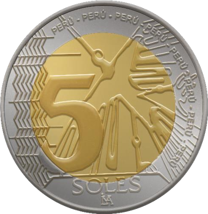
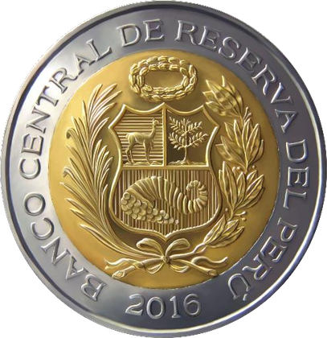
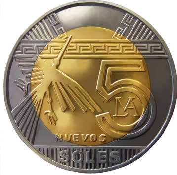
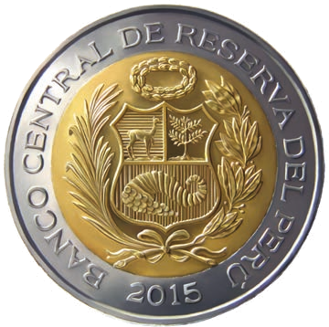
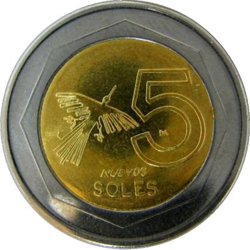
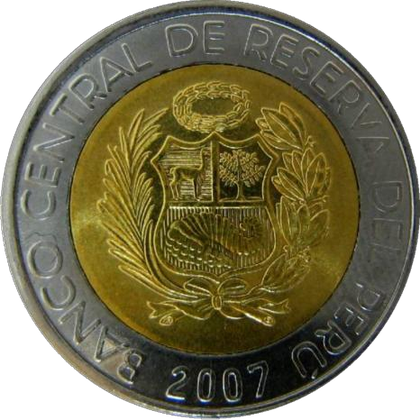

La moneda de S/ 5.00 ha tenido tres diseños a lo largo de su historia.


Reverso: Al centro se observa la denominación en número (5) y motivo alusivo a las Líneas de Nazca, "El Ave Fragata", que se reproduce abarcando tanto el núcleo como parte del anillo. Al lado del valor en número se observa un conjunto de ocho líneas en forma de zigzag verticales. En el anillo, alrededor del Ave Fragata se aprecia el micro texto PERÚ que se repite ocho veces. En la parte inferior se aprecia la unidad monetaria SOLES y debajo el logotipo de la Casa Nacional de Moneda.
Anverso: Al centro el Escudo de Armas del Perú y alrededor la leyenda "Banco Central de Reserva del Perú" y el año de acuñación. La dimensión del Escudo ocupa casi la totalidad del núcleo.
| Aleación | Diámetro (mm) | Peso (g) | Canto |
|---|---|---|---|
| Bimetálica | 24,38 | 6,67 | Estriado continuo |


Esta moneda presenta en el reverso la imagen del "Ave Fragata" perteneciente a las Líneas de Nazca (geoglifos precolombinos) ubicados en el departamento de Ica, al sur del Perú, que se reproduce abarcando tanto el núcleo como parte del anillo.
En el anverso lleva el Escudo de Armas del Perú y alrededor la leyenda "BANCO CENTRAL DE RESERVA DEL PERÚ" y el año de acuñación.
| Aleación | Diámetro (mm) | Espesor (mm) | Peso (g) | Canto |
|---|---|---|---|---|
| Bimetálica | 24,38 | 2,10 | 6,67 | Estriado continuo |


Esta moneda presenta en el reverso la imagen del "Ave Fragata" perteneciente a las Líneas de Nazca (geoglifos precolombinos) ubicados en el departamento de Ica, al sur del Perú.
En el anverso lleva el Escudo de Armas del Perú y alrededor la leyenda "BANCO CENTRAL DE RESERVA DEL PERÚ" y el año de acuñación.
| Aleación | Diámetro (mm) | Espesor (mm) | Peso (g) | Canto |
|---|---|---|---|---|
| Bimetálica | 24,32 | 2,00 | 6,67 | Estriado |